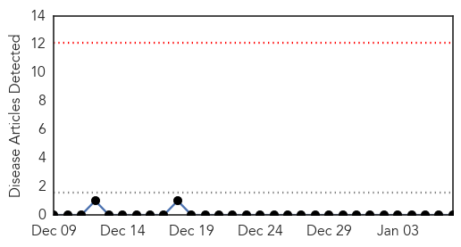
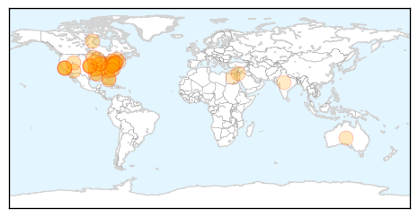
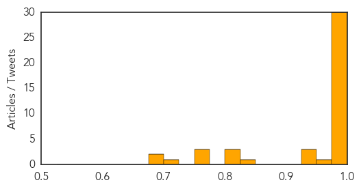

Bubonic Plague
30-Day Web Trend
0 alerts, 0 warnings

30-Day Twitter Trend
0 alerts, 0 warnings

Article Locations


Article Confidences

Top Articles:
-
No articles found for Jan 07, 2015
Top Tweets:
-
No tweets found for Jan 07, 2015
Influenza
30-Day Web Trend
1 alerts, 0 warnings

30-Day Twitter Trend
0 alerts, 0 warnings

Article Locations
Article Confidences
Top Articles:
- 1.000
- Flu now widespread, CDC reports
- 1.000
- Region's influenza cases jump, but mild season so far
- 1.000
- Influenza In US ‘Widespread,’ But Fear May Outpace Threat
- 1.000
- Flu outpaces vaccine, 100+ cases in Faulkner County
- 0.999
- Flu is nothing to sneeze at
- 0.999
- The Marysville Advocate: News
- 0.999
- Greene County flu epidemic won't let up
- 0.999
- Flu worse and peaking early this year
- 0.999
- Local News
- 0.999
- Local area already hit hard by influenza
- 0.999
- Children, sick residents asked not to visit hospital patients to - WCIV-TV
- 0.999
- Doctor: Flu cases likely to rise
- 0.999
- Flu activity ‘high’ or ‘widespread’ in 43 states; Pediatric flu deaths now at 21 in US
- 0.999
- Flu outbreak declared at Hotel-Dieu Grace Healthcare
- 0.998
- Flu hits Louisiana with a vengeance
- 0.995
- Health officials on alert as flu deaths rise
- 0.995
- Flu widespread in 43 states, CDC reports
- 0.995
- Flu deaths continue mounting in South Carolina
- 0.995
- Tri-Cities Left Aching With Increasing Reports Of Flu
- 0.993
- Influenza cases are on the rise
- 0.993
- Flu kills 8 in Utah — How you can stop the virus from spreading
- 0.991
- Number Of Flu Cases Rises To 2,300 « CBS Pittsburgh
- 0.991
- Flu ready to hit West Coast hard, doctors say
- 0.990
- Flu Is Hitting Canada Hard In 2015
- 0.989
- Flu season still ahead of us
- 0.988
- N.J. hospitals mixed on imposing mandatory annual flu vaccinations for employees
- 0.987
- Northstate health officials awaiting flu outbreak
- 0.983
- Symptoms of flu? Call doctor ASAP
- 0.982
- Westchester County Officials Monitoring Flu Cases, Recommend Shot « CBS New York
- 0.978
- ‘Unprecedented’ flu in Muncie stops surgeries
- 0.972
- Martin County, FL reports higher than normal rates of influenza
- 0.947
- Local agencies dealing with severe flu epidemic
- 0.944
- VT Health Department: Stay Home if You Have the Flu
- 0.933
- DOH recommends shots
- 0.845
- Avian flu fear leads 30 nations to restrict U.S. poultry
- 0.821
- Avian Flu Spreads in Benton County
- 0.814
- Poll: NYC requires flu shots for day care, preschool. Should Calif.?
- 0.803
- Girl, 12, who died from flu otherwise healthy
- 0.773
- Lehigh Valley Catholic churches change Mass for 2014-15 flu season
- 0.767
- Sherri Tenpenny: Who is the controversial anti-vaccination campaigner planning to visit Australia?
- 0.766
- Protecting against the flu in the classroom
- 0.719
- What’s Going Around
- 0.688
- FAO notes mutations in H5N1 samples from Egypt's poultry
- 0.679
- Dead pigeons point to bird flu in Odisha’s Brahmagiri!
Top Tweets:
-
No tweets found for Jan 07, 2015